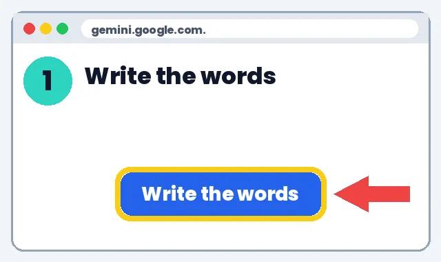
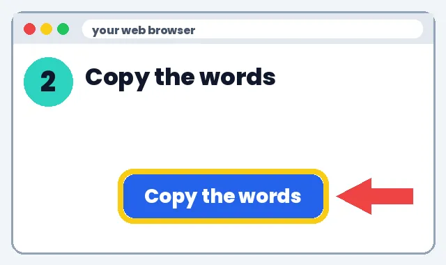
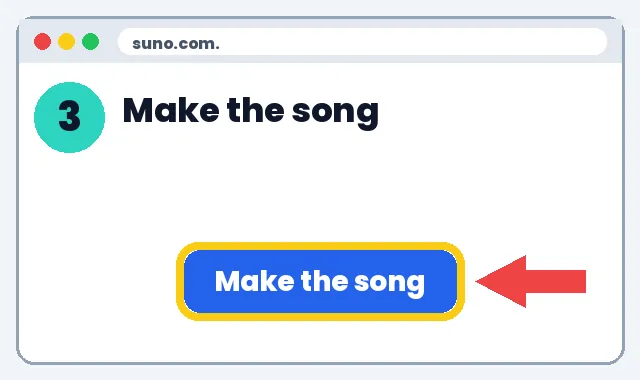
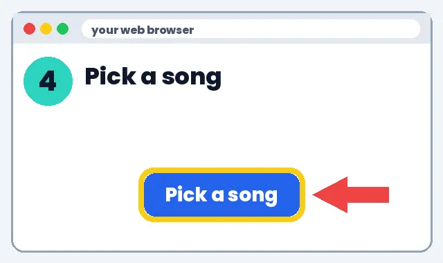
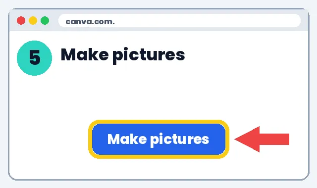
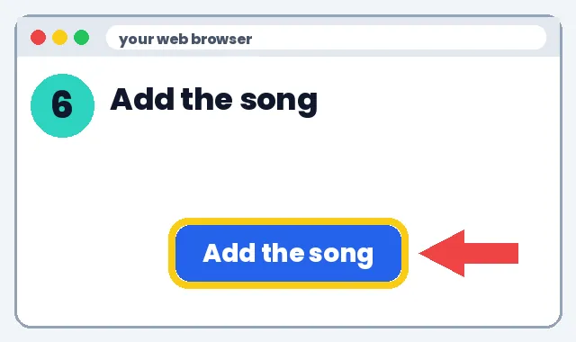
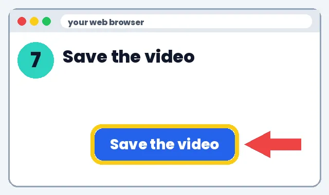
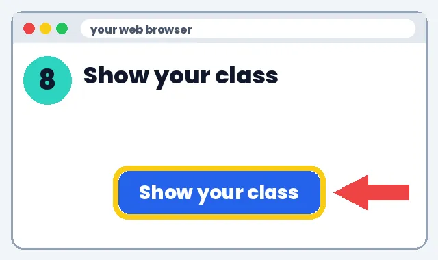

🍎 For Teachers
🎬 Watch It. Then Do It.
Learn more
AI videos let you turn a lesson into a short song, explainer or talking-avatar clip. Kids remember music and pictures better, a 1–2 minute video fits short attention spans, and you can replay it for review, ESL and special-ed support. No tech experience needed. We'll show you every click.
1️⃣ What it can do
🎬 Topic explainer
🗣️ Talking-avatar welcome
2️⃣ How to make it
👉 Show me the steps
Go to gemini.google.com. Click the box that says Ask Gemini. Paste this. Change the words in [brackets].

Click and drag over the song. Press Ctrl+C (Mac: Cmd+C).

Go to suno.com. Click Create. Paste the words. Click Create again.

Play both songs. Click the one you like. Click Download.

Go to canva.com. Click Create a design. Pick Video.

Click Uploads. Add your song. Drag it under your pictures.

Click Share. Click Download. Pick MP4.

Play it in class. No student faces without permission.

📝 Full written steps (text only)
- Write lyrics: Ask AI: “Write a verse and chorus that teach [topic] for grade [x].”
- Make the song: Paste lyrics into Suno's free plan (class use only, not for sale).
- Add pictures: Make scenes in Canva.
- Edit: Put song + pictures together in Canva or CapCut.
- Share: Show in class. No student faces without permission.
🛡️ Safety tip: Use your own adult account. Never type a child's or student's full name, school, address, grades or photos into an AI tool. Check each tool's age rule before anyone signs up.
3️⃣ What to do next
Pick one link below and try it this week. Start small: one tool, one lesson, 10 minutes.
Learn more
🛡️ Safety tip: Use your own adult account. Never type a child's or student's full name, school, address, grades or photos into an AI tool. Check each tool's age rule before anyone signs up.
🎨 What you can make
🍎 Classroom tips
📚 Classroom video ideas that work
No tech experience needed. We'll show you every click.
Learn more
Ideas by subject
1️⃣ What it can do
- Math: times-table or formula songs, word-problem story videos.
- Science: water cycle or life-cycle explainers with pictures.
- Reading: vocabulary songs, book-summary recaps.
- Social studies: a 60-second “history in a minute” explainer.
- Routines: clean-up, line-up or welcome songs.
2️⃣ How to make it
- Pick one topic you teach this week.
- Open gemini.google.com and paste the lyric prompt below.
- Check every fact in the lyrics.
- Go to suno.com, click Create, paste the lyrics into the lyrics box, pick a style (e.g. pop, folk), click Create.
- Listen to both versions it makes. Download the best one (the ⋯ menu → Download).
- Open canva.com (free for K-12 teachers with Canva for Education), choose Video, add pictures and drop in your song.
- Click Share → Download → MP4. Play it in class.
3️⃣ What to do next
Talking-avatar or narrated explainer
1️⃣ What it can do
- A friendly presenter explains a topic or welcomes the class.
- Great for review, sub days and flipped lessons.
2️⃣ How to make it
- Write a 45-second script with the prompt below.
- For narration only: in Canva, record your own voice with the Record yourself tool, or use a text-to-speech option.
- For a talking avatar: tools like HeyGen offer a limited free plan; check its current price and your school's rules first.
- Use only stock or AI avatars, never a student's face or voice.
- Keep it under 2 minutes.
3️⃣ What to do next
💰 Save money: discounts
- Apple Education pricing: Education prices on Macs and iPads
- Microsoft 365 for education: Free web Office apps with an eligible school email
- Google Workspace for Education Fundamentals: Free for qualifying schools
- Canva for Education: Free for eligible K-12 teachers
- DonorsChoose: Ask donors to fund classroom projects
See all deals for teachers & parents
Deals change, check the site. No affiliate links: we earn nothing from these.